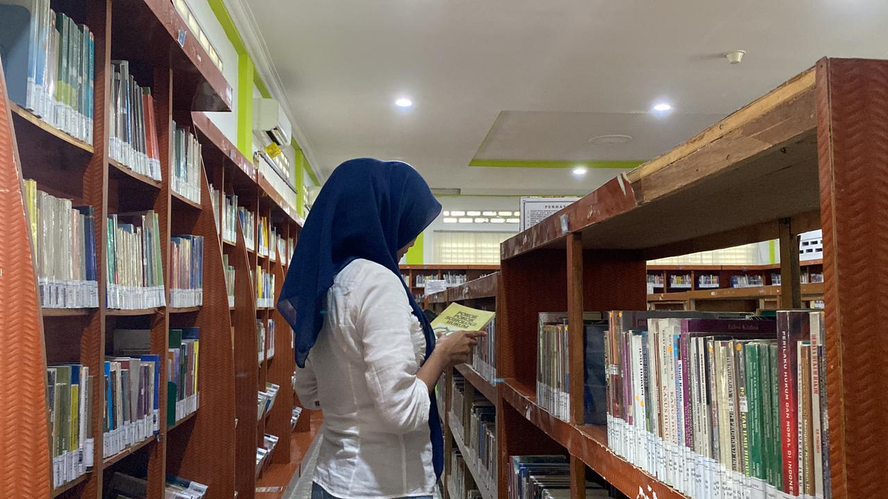
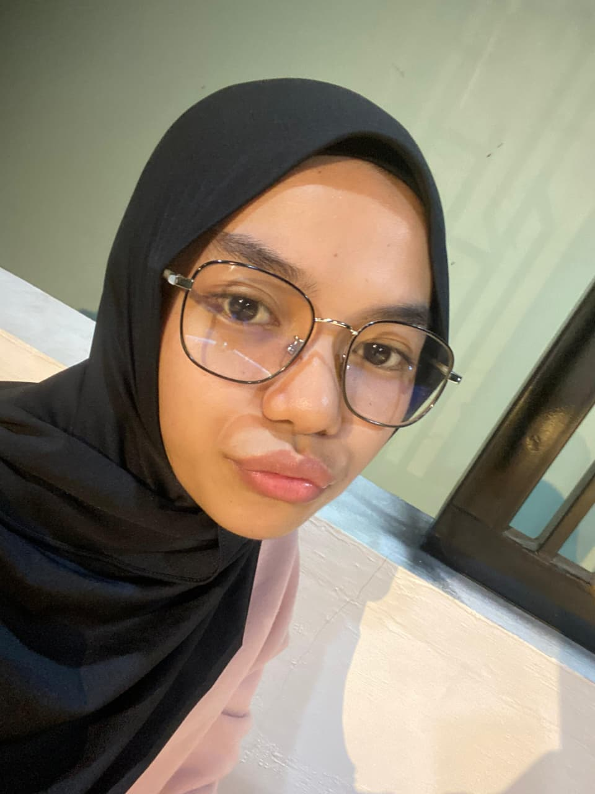
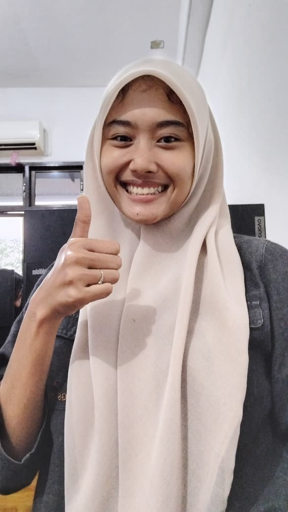

1. Tentang
Kelompok kami terdiri dari dua orang. Kami bekerja sama untuk menyelesaikan tugas dengan baik. Setiap anggota memiliki tugas masing-masing dan saling membantu. Dengan kerja sama yang baik, tugas dapat diselesaikan tepat waktu.

gambar dilab komputer. 2.gambar:membaca buku di perpustakaan.  Adapun kegiatan kami yaitu merancang web,membaca buku tentang html.2.Foto kami
3. Biodata

Nama
Saskya Rahma Dini
Jurusan
Teknologi Informasi
Hobi
Memasak
Alamat
Medan
3. Biodata

Nama
Restu Putri Indira Fatma Negara
Jurusan
Teknologi Informasi
Hobi
Melukis,Menulis
Alamat
Medan
4. Kegiatan